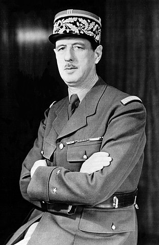
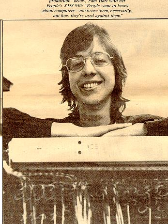

<!DOCTYPE html>
<html lang="en">
  <head>
    <meta charset="utf-8" />
    <meta name="viewport" content="width=device-width, initial-scale=1.0, maximum-scale=1.0, user-scalable=no" />

    <title></title>
    <link rel="stylesheet" href="dist/reveal.css" />
    <link rel="stylesheet" href="dist/theme/simple.css" id="theme" />
    <link rel="stylesheet" href="plugin/highlight/zenburn.css" />
	<link rel="stylesheet" href="css/layout.css" />
	<link rel="stylesheet" href="plugin/customcontrols/style.css">


    <script defer src="dist/fontawesome/all.min.js"></script>

	<script type="text/javascript">
		var forgetPop = true;
		function onPopState(event) {
			if(forgetPop){
				forgetPop = false;
			} else {
				parent.postMessage(event.target.location.href, "app://obsidian.md");
			}
        }
		window.onpopstate = onPopState;
		window.onmessage = event => {
			if(event.data == "reload"){
				window.document.location.reload();
			}
			forgetPop = true;
		}

		function fitElements(){
			const itemsToFit = document.getElementsByClassName('fitText');
			for (const item in itemsToFit) {
				if (Object.hasOwnProperty.call(itemsToFit, item)) {
					var element = itemsToFit[item];
					fitElement(element,1, 1000);
					element.classList.remove('fitText');
				}
			}
		}

		function fitElement(element, start, end){

			let size = (end + start) / 2;
			element.style.fontSize = `${size}px`;

			if(Math.abs(start - end) < 1){
				while(element.scrollHeight > element.offsetHeight){
					size--;
					element.style.fontSize = `${size}px`;
				}
				return;
			}

			if(element.scrollHeight > element.offsetHeight){
				fitElement(element, start, size);
			} else {
				fitElement(element, size, end);
			}		
		}


		document.onreadystatechange = () => {
			fitElements();
			if (document.readyState === 'complete') {
				if (window.location.href.indexOf("?export") != -1){
					parent.postMessage(event.target.location.href, "app://obsidian.md");
				}
				if (window.location.href.indexOf("print-pdf") != -1){
					let stateCheck = setInterval(() => {
						clearInterval(stateCheck);
						window.print();
					}, 250);
				}
			}
	};


        </script>
  </head>
  <body>
    <div class="reveal">
      <div class="slides"><section  data-markdown><script type="text/template"><!-- .slide: class="drop" -->
<div class="" style="position: absolute; left: 0px; top: 0px; height: 700px; width: 960px; min-height: 700px; display: flex; flex-direction: column; align-items: center; justify-content: center" absolute="true">

# I lied.
</div></script></section><section  data-markdown><script type="text/template"><!-- .slide: class="drop" -->
<div class="" style="position: absolute; left: 0px; top: 0px; height: 700px; width: 960px; min-height: 700px; display: flex; flex-direction: column; align-items: center; justify-content: center" absolute="true">

October 29th, 1969 != 'birth of the internet'
</div></script></section><section  data-markdown><script type="text/template"><!-- .slide: class="drop" -->
<div class="" style="position: absolute; left: 0px; top: 0px; height: 700px; width: 960px; min-height: 700px; display: flex; flex-direction: column; align-items: center; justify-content: center" absolute="true">

<split even>


"Most of the current crop of histories of the Internet can be characterized as 'teleologies' or 'Whig history'...as they seek simplistic explanations to draw a line from the ARPANET to the Internet" 

- Russell and Shafer, drawing on Campbell-Kelly and Garcia-Swartz

</split>

RUSSELL, A. L., & SCHAFER, V. (2014). In the Shadow of ARPANET and Internet: Louis Pouzin and the Cyclades Network in the 1970s. _Technology and Culture_, _55_(4), 880–907. http://www.jstor.org/stable/24468474
</div>

<aside class="notes"><p><a href="https://www.historians.org/research-and-publications/perspectives-on-history/september-2012/two-cheers-for-the-whig-interpretation-of-history">https://www.historians.org/research-and-publications/perspectives-on-history/september-2012/two-cheers-for-the-whig-interpretation-of-history</a></p>
</aside></script></section><section  data-markdown><script type="text/template"><!-- .slide: class="drop" -->
<div class="" style="position: absolute; left: 0px; top: 0px; height: 700px; width: 960px; min-height: 700px; display: flex; flex-direction: column; align-items: center; justify-content: center" absolute="true">

One network does not an *inter*network make.
</div></script></section><section  data-markdown><script type="text/template"><!-- .slide: class="drop" -->
<div class="" style="position: absolute; left: 0px; top: 0px; height: 700px; width: 960px; min-height: 700px; display: flex; flex-direction: column; align-items: center; justify-content: center" absolute="true">

Meanwhile, in France...

<split even>



</split>
</div>

<aside class="notes"><p>Charles de Gaulle - France wants atomic bombs/energy <em>too</em></p>
<ul>
<li>national computer firms being bought up by american ones</li>
<li>American government refusing to supply computing power necessary to develop nuclear energy</li>
<li>&#39;computers&#39; becoming not just a tool, but a <em>signifier</em> of broader political, economic ambitions</li>
</ul>
<p>Plan Calcul - 1966</p>
<ul>
<li><p>sees the creation of Institut de recherche en informatique et automatique IRIA</p>
</li>
<li><p>sees creation of domestic computer company champion, &#39;Compagne Internationale pour l&quot;informatique&#39;</p>
</li>
<li><p>Delegation from IRIA to Kleinrock at UCLA, sees the work on the IMP, September 1969</p>
</li>
<li><p>prompts interest in packet switching for IRIA</p>
</li>
</ul>
</aside></script></section><section  data-markdown><script type="text/template"><!-- .slide: class="drop" -->
<div class="" style="position: absolute; left: 0px; top: 0px; height: 700px; width: 960px; min-height: 700px; display: flex; flex-direction: column; align-items: center; justify-content: center" absolute="true">

CYCLADES - 1971 - demo'd in 1973 - fully operational 1976


<small>
"One should retain the image [of the Cyclades islands]; the processing centers are still today islands isolated in the middle of an ocean of data, which overhelms our civilization. Now, thanks to the networks, these islands will be able to connect and thus contribute to a wide circle of information exchanges which will shape the future development of our society."
</small>
</div>

<aside class="notes"><ul>
<li>Maurice Allègre to government ministers - head of the Delegation a l&#39;informatique - the mission to the US that visited UCLA etc</li>
</ul>
</aside></script></section><section  data-markdown><script type="text/template"><!-- .slide: class="drop" -->
<div class="" style="position: absolute; left: 0px; top: 0px; height: 700px; width: 960px; min-height: 700px; display: flex; flex-direction: column; align-items: center; justify-content: center" absolute="true">

- project led by Louis Pouzin
 - coins the term 'datagram' ; data + telegram
	 - gets the hosts to do the error correction, not the routers;
	 - makes the hosts responsible for delivery of the data on a 'best-effort' means (ie timeouts)
	 - the routers ensure transparency end-to-end
	 - this greatly simplifies interconnectivity
 - explicitly designed from the *outset* to connect different networks together (unlike ARPANET)
</div>

<aside class="notes"><p>initially conceived as a tool to access different government databases throughout the state; but also a research project on the field of data transmission/computer communication</p>
<p>Louis Pouzin joins IRIA in 1971 after spending time in telephony, MIT;
    - at MIT he built timesharing systems, as well as laying the groundwork for &#39;shell&#39; scripts
    - while at MIT he also antagonized the IBM reps by showing how one could replace pricey IBM components &amp; supplies with more generic ones</p>
<p>CYCLADES + ARPANET?</p>
<ul>
<li>by 1971 french officials at embassy in washington are recommending that the two be linked together</li>
<li>arpanet folks loved the idea; engineers from both sides collaborate</li>
<li>but the cost of a transatlantic direct connection - 13 million francs over three years - too much</li>
<li>and Pouzin thought the protocol that ARPANET was using in its IMPs - the &#39;Network Control Program&#39; or NCP was too primitive for cyclades (which was true.)</li>
<li>But ultimately, the &#39;partnership&#39; was framed in a way that made french interests subservient to US interests: a no starter.</li>
<li>but exchanges of engineers between the various projects continued</li>
</ul>
</aside></script></section><section  data-markdown><script type="text/template"><!-- .slide: class="drop" -->
<div class="" style="position: absolute; left: 0px; top: 0px; height: 700px; width: 960px; min-height: 700px; display: flex; flex-direction: column; align-items: center; justify-content: center" absolute="true">

Meanwhile, in the Pacific...
</div></script></section><section  data-markdown><script type="text/template"><!-- .slide: class="drop" -->
<div class="" style="position: absolute; left: 0px; top: 0px; height: 700px; width: 960px; min-height: 700px; display: flex; flex-direction: column; align-items: center; justify-content: center" absolute="true">


ALOHANET
- University of Hawaii - main campus near Honolulu, other campuses on the main island and on Oahu, Kauai, Maui, and Hawaii - radius of about 300 km
- 1968 department of Electrical Engineering begin planning a way to broadcast data over radio, rather than wire
- to permit sharing of the main campus computer
- technical issues solved and goes into use June 1971

<small>
Schwartz M, Abramson N. The Alohanet-surfing for wireless data [History of Communications]. IEEE Communications Magazine. 2009 Dec 11;47(12):21-5.
</small>
</div>

<aside class="notes"><ul>
<li>but for various technical reasons, sharing frequency was a very difficult problem to solve; eventually settle on a single high-speed burst of packets on a shared channel (1969)</li>
<li>designed hardware to retransmit signals as needed</li>
<li>technically it was a &#39;random access/broadcast architecture&#39;, and they determined that this architecutre could work anywhere where traffic on the network was &#39;bursty&#39; - including satellites</li>
<li>they connect to ARPANET by 1974 via a satellite - but to do that, they had to get the communications satellite industry (thus, telephone companies) to recognize that data needed different channels than voice (otherwise, they&#39;d be converting via modems back and forth a ridiculous number of times)</li>
<li>this also becomes foundational work in eventual cellphone &amp; smartphone technologies</li>
</ul>
</aside></script></section><section  data-markdown><script type="text/template"><!-- .slide: class="drop" -->
<div class="" style="position: absolute; left: 0px; top: 0px; height: 700px; width: 960px; min-height: 700px; display: flex; flex-direction: column; align-items: center; justify-content: center" absolute="true">

Meanwhile, in space and across the atmosphere...
</div></script></section><section  data-markdown><script type="text/template"><!-- .slide: class="drop" -->
<div class="" style="position: absolute; left: 0px; top: 0px; height: 700px; width: 960px; min-height: 700px; display: flex; flex-direction: column; align-items: center; justify-content: center" absolute="true">


SATNET

- proposal from Larry Roberts in 1970 to connect ARPANET to Davis' National Physical Laboratory network
- eventually comes to fruition by 1973, but to University College London instead
</div>

<aside class="notes"><ul>
<li>ARPA already had a dedicated link via a satellite to a seismic research station in Norway</li>
<li>why earthquakes? lets you monitor for clandestine treaty-busting nuclear testing</li>
<li>so, since that dedicated link already exists, lets hijack it, and in Norway, install more router/gateways/whatever the current acronym is to get data onto the phone lines down to the UK</li>
<li>Peter Kierstein at UCL was behind the first two ARPAnet node outside of US., the one in Norway, and the one at UCL</li>
</ul>
</aside></script></section><section  data-markdown><script type="text/template"><!-- .slide: class="drop" -->
<div class="" style="position: absolute; left: 0px; top: 0px; height: 700px; width: 960px; min-height: 700px; display: flex; flex-direction: column; align-items: center; justify-content: center" absolute="true">


PRNET

- packet radio network
- Inspired by alohanet, but hey, let's make things *mobile* too!
- develops a radio receiver/broadcaster that can use packets - basically, a mobile router
- of great interest to the military side of things
</div>

<aside class="notes"></aside></script></section><section  data-markdown><script type="text/template"><!-- .slide: class="drop" -->
<div class="" style="position: absolute; left: 0px; top: 0px; height: 700px; width: 960px; min-height: 700px; display: flex; flex-direction: column; align-items: center; justify-content: center" absolute="true">

Elsewhere in Europe:

European Informatics Network

- share resources
- promote computer science
- testbed for techniques
- proposed in 1971, work begins 1973, 10 countries wired up by 1976
</div></script></section><section  data-markdown><script type="text/template"><!-- .slide: class="drop" -->
<div class="" style="position: absolute; left: 0px; top: 0px; height: 700px; width: 960px; min-height: 700px; display: flex; flex-direction: column; align-items: center; justify-content: center" absolute="true">

There are others. 

Finding a 'history of' 'internetworking' 'country' would be a good thing to add to your memex.

Jennifer shared a document via Discord concerning the Canadian context - go have a read!
</div></script></section><section  data-markdown><script type="text/template"><!-- .slide: class="drop" -->
<div class="" style="position: absolute; left: 0px; top: 0px; height: 700px; width: 960px; min-height: 700px; display: flex; flex-direction: column; align-items: center; justify-content: center" absolute="true">

Some were commercial

- Telenet
</div>

<aside class="notes"><ul>
<li>Telenet set up 1975 by BBN to provide a commercial kind of ARPANET</li>
<li>It was Telenet that eventually provides UK Postoffice with packet switching network</li>
</ul>
</aside></script></section><section  data-markdown><script type="text/template"><!-- .slide: class="drop" -->
<div class="" style="position: absolute; left: 0px; top: 0px; height: 700px; width: 960px; min-height: 700px; display: flex; flex-direction: column; align-items: center; justify-content: center" absolute="true">

Some of them aren't even official.

<split even>




</split>
</div>

<aside class="notes"><ul>
<li>Resource One &amp; Project One, 1972</li>
<li>hippy commune in an old warehouse, a &#39;pueblo in a city</li>
<li>Sherry Reson, Pam Hardt-English, Mya Shone, and Chris Macie</li>
<li>and somehow, they got their hands on a Scientific Data Systems 940 mainframe (in 1969 one of these was the host for SRI on arpanet)</li>
<li>they were CS dropouts, joined the commune, decided they&#39;d get it &#39;online&#39;</li>
<li>they introduced a computer into a culture that already was run on informal networks coordinated through physical billboards in coffee shops, music venues, on the streets.</li>
<li>there were even phone lines with human operators (operating out of their own home), telephone trees, to try to help people locate their kids in the scene; also coordinated protests and rapid responses; there were &#39;switchboards&#39; for all sorts of purposes all around the bay</li>
<li>they wanted to use the computer to coordinate and consolidate these switchboards, for more effective action</li>
<li>the 940 they got was the actual one from Stanford, which had been on lease; they convinced the actual owner it was worth more as a tax-write off to them.</li>
<li>the commune wired it up, programmed it from scratch, created the &#39;Resource One Generalized Information Retrieval System&#39;, ROGIRS, written by Ephrem Lipkin - a way to manage this underground alternative society</li>
<li>they obtain terminals&amp;modems and place them in the coffeeshops etc but camouflaged in boxes, with &#39;community memory&#39; painted on the side, make them less jarring</li>
<li>signs like &#39;where can i get a decent bagel in the bay area / if you know leave the information here in the computer&#39;</li>
<li>people start leaving all sorts of things, even having conversations</li>
<li>the switchboard part kinda failed, but the community part thrived; to fill in the gap left by the switchboard, they create a.social service referral dtabase that actual social workers used; the resource one people would call around and would update the information themselves in the machine, keep track of everything &amp; then they <em>printed the thing out and mailed it to social workers</em> .  three ring binder, but still a networked object.</li>
<li>the United Way eventually takes over the directory (which was still a going concern up to 2009)</li>
<li>they make decisions based on consensus</li>
<li>a model for how to <em>be</em> online, and for what <em>ordinary</em> folks might want to use the machines for</li>
</ul>
<p><a href="https://www.foundsf.org/index.php?title=Ambivalent_Memories_of_Virtual_Community">https://www.foundsf.org/index.php?title=Ambivalent_Memories_of_Virtual_Community</a>
<a href="https://www.wheels.org/spacewar/stone/rolling_stone.html">https://www.wheels.org/spacewar/stone/rolling_stone.html</a></p>
</aside></script></section><section  data-markdown><script type="text/template"><!-- .slide: class="drop" -->
<div class="" style="position: absolute; left: 0px; top: 0px; height: 700px; width: 960px; min-height: 700px; display: flex; flex-direction: column; align-items: center; justify-content: center" absolute="true">

So how do you internetwork these things?
</div>

<aside class="notes"><ul>
<li>To make an <em>inter</em>net therefore, you need to figure out how to make the data travelling in your own network <em>understandable</em> to the routers and gateways in the <em>other</em> network.</li>
<li>the routing information, the error correction, the confirmation of delivery...</li>
<li>but... who keeps track of addresses? who keeps the directory?</li>
<li>... why, that&#39;s scarequote <em>women&#39;s work</em> scarequote. Again.</li>
</ul>
</aside></script></section><section  data-markdown><script type="text/template"><!-- .slide: class="drop" -->
<div class="" style="position: absolute; left: 0px; top: 0px; height: 700px; width: 960px; min-height: 700px; display: flex; flex-direction: column; align-items: center; justify-content: center" absolute="true">

Meanwhile, back in ARPA, ca 1972

Elizabeth 'Jake' Feinler


</div>

<aside class="notes"><p>Engelbart offers her the running of NIC. Says she has to create a &#39;resource handbook&#39;.</p>
<p>&quot;What&#39;s a resource handbook?&quot;</p>
<p>&quot;I don&#39;t know, but we need one in six weeks.&quot;</p>
<p>trained as a chemist, worked as a &#39;information chemist&#39;, responsible for cataloguing new data; took a job at Stanford because she was more interested in the information than the chemistry, would find research for others, summarize on index cards - she was making their memex&#39;s, basically!</p>
<p>Engelbart worked upstairs, but starts hanging around her. Engelbart hires her into the arpanet project. by 1972 there are 30 nodes in arpanet. SRI was the node that was to keep track of all the others, remember, and designated the place to solve the routing issues. The Network Information Center</p>
<ul>
<li>in six weeks, important demo for boffins from the department of defense.</li>
</ul>
</aside></script></section><section  data-markdown><script type="text/template"><!-- .slide: class="drop" -->
<div class="" style="position: absolute; left: 0px; top: 0px; height: 700px; width: 960px; min-height: 700px; display: flex; flex-direction: column; align-items: center; justify-content: center" absolute="true">

Eventually develops a 'handbook' (both physical, and digital database)

- resources at evey host
- responsible technical administrators
- 1000 pages, record of every node, insitution, and person who together made 'ARPANET'
- goes on to create a directory, ever person on the arpanet and how to find them
- registers all new hosts, all new documentation, all new how-tos
</div>

<aside class="notes"><p>by 1974, she and her mostly female team manage the &#39;host table&#39; - the system for making sure every connected device has a unique name, and that their hardware meets spec.</p>
<ul>
<li>&#39;air traffic control, head librarian, and manager... all rolled into one&#39;</li>
<li>remember the mother of all demos? the system intimidated military brass, but it made perfect sense to folks who, like Jake, worked with information every day; so she also had a social role of intervening so as to prevent men from embarrassing themselves...</li>
</ul>
</aside></script></section><section  data-markdown><script type="text/template"><!-- .slide: class="drop" -->
<div class="" style="position: absolute; left: 0px; top: 0px; height: 700px; width: 960px; min-height: 700px; display: flex; flex-direction: column; align-items: center; justify-content: center" absolute="true">

Mother of All Demos Again:

<iframe width="560" height="315" src="https://www.youtube.com/embed/B6rKUf9DWRI" title="YouTube video player" frameborder="0" allow="accelerometer; autoplay; clipboard-write; encrypted-media; gyroscope; picture-in-picture; web-share" allowfullscreen></iframe>
</div>

<aside class="notes"><p>All these ways of making the computer serve the human intellect that Engelbart &amp; co come up with... lots of these would&#39;ve been coded &#39;feminine&#39; , the work of secretaries and clerks... just remember that when you see a techbro talking about well anything. Chances are they&#39;re just pulling a Harold Wilson again.</p>
</aside></script></section><section  data-markdown><script type="text/template"><!-- .slide: class="drop" -->
<div class="" style="position: absolute; left: 0px; top: 0px; height: 700px; width: 960px; min-height: 700px; display: flex; flex-direction: column; align-items: center; justify-content: center" absolute="true">

"Just as previous generations of human computers working together embodied the network to come, the early Internet's female information sicenties embodied another function that would eventually be taken over by the system itself: search"

Claire L. Evanas, *Broad Band*, 2018: 204

- Jake Feinler eventually builds [WHOIS](https://lookup.icann.org/en/lookup) command and database into the system
</div>

<aside class="notes"><p>Jake&#39;s office handled everything. People constantly asking her for stuff.
-took a huge amount of labour to keep NIC working. Jake actually used real-time chat over ARPANET to keep in touch with women &amp; colleagues across country.
-&#39;Request for Comments&#39; - memos on how things ought to work - originally printed out and shared, but NIC starts putting them on their machine so others can find em, and comment.</p>
</aside></script></section><section  data-markdown><script type="text/template"><!-- .slide: class="drop" -->
<div class="" style="position: absolute; left: 0px; top: 0px; height: 700px; width: 960px; min-height: 700px; display: flex; flex-direction: column; align-items: center; justify-content: center" absolute="true">

<div align="left">

"What the NIC did at first was, ostensibly, administrative: the secretarial afterthought of putting the ARPANET's newly available computing resources down on paper to please its funders, and then maintaining a record of its coordinates and contacts... here again were women elevating the mundane, identifying the missing human component of a complex technological undertaking." 

Claire L. Evanas, *Broad Band*, 2018: 217
</div>
</div>

<aside class="notes"><p>Over the course of the 1970s, the role of the NIC, and especially women there, becomes seen as a threat in some corners</p>
<p>This is also partly because the military - and the Defense Communications Agency - takes over ARPANET in 1975</p>
<p>military decides to actually have a duplicate network, one with proven comms tech for actual military use, and leaves ARPANet pretty much as it is so that it can continue to futz around and figure things out. THEY ALSO use ARPANET though, with nodes on that network too.</p>
</aside></script></section><section  data-markdown><script type="text/template"><!-- .slide: class="drop" -->
<div class="" style="position: absolute; left: 0px; top: 0px; height: 700px; width: 960px; min-height: 700px; display: flex; flex-direction: column; align-items: center; justify-content: center" absolute="true">


- Ok. So - 1969 - 1973 ish - a period of ferment
- other networks starting up, other ways of implementing similar ideas
- in a context of national competition and paranoia
- including non-government operations 
- and ways of being mediated through these networks
- and ways of being augmented by computers and the networks.
</div></script></section><section  data-markdown><script type="text/template"><!-- .slide: class="drop" -->
<div class="" style="position: absolute; left: 0px; top: 0px; height: 700px; width: 960px; min-height: 700px; display: flex; flex-direction: column; align-items: center; justify-content: center" absolute="true">

ARPANET project oversight:

Bolt, Beranek and Newman: IMP hardware, software, operations

UCLA- analysis (how well is the network working?)

Network Analysis Corporation - topology (how well is the network connected?)

SRI - network information center

Network Working Group - host protocols
</div>

<aside class="notes"><p>so for instance, UCLA might say the network is buckling under the load, and BBN needs to make x, y, z change, but then NWG might say, no, NAC needs to change how things are wired... lots of social dynamics. nothing foreordained! And keep in mind every network project would have similar kinds of discussions and fights and feuds and figures.</p>
</aside></script></section><section  data-markdown><script type="text/template"><!-- .slide: class="drop" -->
<div class="" style="position: absolute; left: 0px; top: 0px; height: 700px; width: 960px; min-height: 700px; display: flex; flex-direction: column; align-items: center; justify-content: center" absolute="true">

And, in the early 1970s, wasn't really *working* beyond the mere technical sense.
</div>

<aside class="notes"><ul>
<li>systems might be connected, but lots of problems and relatively low usage</li>
<li>host systems had to build specialized interface with IMP - 6 to 12 months</li>
<li>then had to implement the protocols to handle communciation with the IMP - another 6 - 12 months</li>
<li>so Larry Roberts, Robert Kahn decide a big demo is needed, and they target the First International Conference on Computer Communications in Washington 1972</li>
</ul>
</aside></script></section><section  data-markdown><script type="text/template"><!-- .slide: class="drop" -->
<div class="" style="position: absolute; left: 0px; top: 0px; height: 700px; width: 960px; min-height: 700px; display: flex; flex-direction: column; align-items: center; justify-content: center" absolute="true">

First International Conference on Computer Communications in Washington 1972
- lots of things being demo'd, including
	- air traffic simulation,
	- real time conferencing
	- computerized chess player
	- Joseph Weizenbaum's [ELIZA](https://www.masswerk.at/elizabot/) program
- they set up a terminal / host system at the conference demonstrating ARPANET
</div>

<aside class="notes"><p>which boosts use and convinces even the telephone people that packet switching works. User numbers increase</p>
</aside></script></section><section  data-markdown><script type="text/template"><!-- .slide: class="drop" -->
<div class="" style="position: absolute; left: 0px; top: 0px; height: 700px; width: 960px; min-height: 700px; display: flex; flex-direction: column; align-items: center; justify-content: center" absolute="true">

Digression. This photo supposedly from the conference:


Reverse image search suggests it comes from [here](https://azdot.gov/node/7545)

Do you know how to reverse image search?
</div></script></section><section  data-markdown><script type="text/template"><!-- .slide: class="drop" -->
<div class="" style="position: absolute; left: 0px; top: 0px; height: 700px; width: 960px; min-height: 700px; display: flex; flex-direction: column; align-items: center; justify-content: center" absolute="true">

Users:

- consulant: 'the network user, new and established, is probably the most neglected element within the the present development atmosphere'
</div>

<aside class="notes"><ul>
<li>still not many of them</li>
<li>officially, had to be approved for use</li>
<li>unofficially, if they figured out something new or made a contribution to fixing a problem, they were allowed to continue (remember, from 1975 it&#39;s a DoD oversight project again)</li>
</ul>
</aside></script></section><section  data-markdown><script type="text/template"><!-- .slide: class="drop" -->
<div class="" style="position: absolute; left: 0px; top: 0px; height: 700px; width: 960px; min-height: 700px; display: flex; flex-direction: column; align-items: center; justify-content: center" absolute="true">

Unintended Users

- Michael Hart at U of Illinois - posts Declaration of Independence on his site's computer in 1972- the start of Project Gutenberg
- users at MIT found they could use the IMP to speed up local data communications on their own campus, not even sending material onto ARPANET - a Local Area Network
- games
</div>

<aside class="notes"><ul>
<li>in fact, &#39;resource sharing&#39; was not even a majority use of ARPANETs resources (the initial rationale behind the project)</li>
<li>computers getting smaller and more powerful too</li>
<li>zork - Patricia Crowther, Will Crowther - caving enthusiasts, programmers for BBN, Mammoth Cave Kentucky, Collosal Cave Adventure - leaves it on mainframe, enthusiasts find over at MIT, magical elements added, becomes Zork...</li>
</ul>
</aside></script></section><section  data-markdown><script type="text/template"><!-- .slide: class="drop" -->
<div class="" style="position: absolute; left: 0px; top: 0px; height: 700px; width: 960px; min-height: 700px; display: flex; flex-direction: column; align-items: center; justify-content: center" absolute="true">

<div align="left">
"Had the ARPANET's only value been as a tool for resource sharing, the network might be remembered today as a minor failure rather than a spectacular success. But the network's users unexpectedly cam up with a new focus for network activity: electronic mail."

Janet Abbate:  *Inventing the Internet* MIT Press 1999, 106.

</div>
</div>

<aside class="notes"><ul>
<li>even by 1971, idea was you could have a file on the host, call it &#39;mailbox&#39;. Get your machine to send data to write into that mailbox. ta da, email! </li>
<li>various kludges existed to make the concept work, becomes formally encoded by 1973</li>
<li>finding an email address - via NIC</li>
<li>email, and communicating about projects and data: THIS is what really makes people want to use ARPANET</li>
</ul>
</aside></script></section><section  data-markdown><script type="text/template"><!-- .slide: class="drop" -->
<div class="" style="position: absolute; left: 0px; top: 0px; height: 700px; width: 960px; min-height: 700px; display: flex; flex-direction: column; align-items: center; justify-content: center" absolute="true">

# ALRIGHT

... I hear you say. 

### The ARPANET is not the INTERNET. Can we get to the Internetting part?

I'm glad you used that word 'internetting'. 

Internet isn't a noun, it's a verb. So let's talk about Vint Cerf and Robert Kahn
</div>

<aside class="notes"><ul>
<li>both working at UCLA. Tasked with figuring out how to make the different networks funded by ARPA (not just ARPANet) talk to one another</li>
<li>eg, in particular, packet radio, satellite radio</li>
<li>had to be compensate for errors, and now had to make the networks talk</li>
<li>Cerf &amp; Kahn get the credit, but many many people worked on this dimension to the larger project</li>
</ul>
</aside></script></section><section  data-markdown><script type="text/template"><!-- .slide: class="drop" -->
<div class="" style="position: absolute; left: 0px; top: 0px; height: 700px; width: 960px; min-height: 700px; display: flex; flex-direction: column; align-items: center; justify-content: center" absolute="true">

Well, in a moment. Remember Alohanet? 


Xerox Palo Alto Research Center adapts Alohanet method for wired communcation around its facilities.
</div>

<aside class="notes"><p>When you broadcast packets, they can collide. Different terminals might broadcast at the same time. Alohanet builds in an element of randomization to when you might transmit, and also builds in the concept of acknowledgement that data was received.</p>
<p>doing this over cable increases the bandwith considerably, and the speed. Almost as if it&#39;s just there, in the aether... branded as ethernet. emerges out of 1973 phd thesis by a guy name Robert Metcalfe, who came to work at PARC after graduation. Commercial spinoff in 1981, 3com, which powers all sorts of commerical local area networks in the 80s and 90s.</p>
<p>Ethernet is part of the solution to &#39;internetting&#39;.</p>
<p>Finding this solution  is the work of the Network Working Group, now branded as &#39;International&#39;</p>
<ul>
<li>INWG brings together people from ARPANET, British NPL, CYCLADES, and others, including military (who had their own nodes on the ARPANET</li>
</ul>
<p>&#39;Ethernet ideas might serve well in garrison or aboard a ship. Packet radio concepts are crucial for local area mobile communication, ARPANET technology is appropriate for fixed installations as in US or Europe. Finally, packet satellite supports wide geographic coverage... the conculsion is that many different transmission technologies are needed for military operations...&#39; Cerf, 1979</p>
<p>maybe this is the origin of the idea that the &#39;internet was designed for secure comms in case of nukes&#39; comes from.</p>
</aside></script></section><section  data-markdown><script type="text/template"><!-- .slide: class="drop" -->
<div class="" style="position: absolute; left: 0px; top: 0px; height: 700px; width: 960px; min-height: 700px; display: flex; flex-direction: column; align-items: center; justify-content: center" absolute="true">

Cerf and Kahn oversee a series of meetings and seminar to hammer out details amongst interested parties

- datagrams from cyclades
- error correction and random access from ethernet/alohanet, 
- and also: no more imps or network control protocol. The host itself has to handle this.

- &shy;<!-- .element: class="fragment" data-fragment-index="1" -->Transmission Cotnrol Protocol (TCP) hammered out by 1973
</div>

<aside class="notes"><p>TCP was for hosts to implement.
    - reflects design philosophy of Cyclades and Ethernet
    - original design of ARPAnet had extremely reliable network connections, but that was not something that could be counted on for <em>inter</em> networking. Also, IMPs delivered things in sequence. If they were out of sequence, chaose. New protocol handles this.
    - this solution was not inevitable; others were proposed. But other protocols might replicate national or institutional borders, and might not scale. This way, host-to-host makes everything appear seemless, one giant space.</p>
</aside></script></section><section  data-markdown><script type="text/template"><!-- .slide: class="drop" -->
<div class="" style="position: absolute; left: 0px; top: 0px; height: 700px; width: 960px; min-height: 700px; display: flex; flex-direction: column; align-items: center; justify-content: center" absolute="true">

At the boundaries between networks, the creation of Gateways


Companies emerge to physically handle those gateways.
</div>

<aside class="notes"><p>-gateway computer a special kind of host that handles all packets sent from within one network destined for another. Would have routing tables for the connected networks, would do any necessary translating between networks.</p>
<ul>
<li><p>this has real-world physical consequences; businesses emerge to facilitate bringing two networks together and to house the gateways. See <a href="https://www.washingtonpost.com/dc-md-va/2023/02/10/data-centers-northern-virginia-internet/">wapo/</a>
 We&#39;ll talk more about physical internet infrastructure in a week or two, never fear.</p>
</li>
<li><p>also, addresses actually have to get sorted out now!</p>
</li>
</ul>
</aside></script></section><section  data-markdown><script type="text/template"><!-- .slide: class="drop" -->
<div class="" style="position: absolute; left: 0px; top: 0px; height: 700px; width: 960px; min-height: 700px; display: flex; flex-direction: column; align-items: center; justify-content: center" absolute="true">

1978: TCP gets split into TCP/IP
</div>

<aside class="notes"><p>How to actually program this protocol still up in the air (it&#39;s the difference between a blueprint and a finished building)</p>
<ul>
<li>for various technical reasons, this single protocol TCP eventually gets split so that host-to-host protocol becomes TCP and the the business of passing packets around whereever in the system or systems is handled by an internetwork protocol, IP. Gateways can now be simplar and just handle IP. Both protocols designed to make the least number of assumptions.</li>
</ul>
</aside></script></section><section  data-markdown><script type="text/template"><!-- .slide: class="drop" -->
<div class="" style="position: absolute; left: 0px; top: 0px; height: 700px; width: 960px; min-height: 700px; display: flex; flex-direction: column; align-items: center; justify-content: center" absolute="true">

THERE ARE OTHER PROTOCOLS out there.

Other ways of manging this. 

And there are a grab bag of acronyms and fancy designations. 

X.25 is one of them
</div></script></section><section  data-markdown><script type="text/template"><!-- .slide: class="drop" -->
<div class="" style="position: absolute; left: 0px; top: 0px; height: 700px; width: 960px; min-height: 700px; display: flex; flex-direction: column; align-items: center; justify-content: center" absolute="true">

*The REAL birth of the internet* Nov 27 1977.


</div>

<aside class="notes"><ul>
<li>computer on a van on a freeway in California sends a message using PRNET to ARPANET gateway</li>
<li>message travels through ARPANET to east coast, then satellite uplink throuh SATNET gateway</li>
<li>message travles through SATNET to Europe</li>
<li>travels back to a computer in Santa Barbara via ARPANet</li>
</ul>
</aside></script></section><section  data-markdown><script type="text/template"><!-- .slide: class="drop" -->
<div class="" style="position: absolute; left: 0px; top: 0px; height: 700px; width: 960px; min-height: 700px; display: flex; flex-direction: column; align-items: center; justify-content: center" absolute="true">


</div></script></section><section  data-markdown><script type="text/template"><!-- .slide: class="drop" -->
<div class="" style="position: absolute; left: 0px; top: 0px; height: 700px; width: 960px; min-height: 700px; display: flex; flex-direction: column; align-items: center; justify-content: center" absolute="true">

BBN starts packaging TCP/IP into Unix operating system; it gets incorporated into other flavours of computing machinery too. Including in IBM machines.

But... most hosts on ARPANET continued to putter along with the original specifications: they were quite happy just talking amongst themselves.

Decision from on high: You **will** shift to TCP/IP by January 1983 or be cut out of ARPANET entirely. 

The clock is ticking....
</div>

<aside class="notes"><p>also, DCA is worried by the growth of consumer grade computers and the possibility that TCP/IP makes it easy to &#39;hack&#39; into the network. Decision is taken to split the military arpanodes out of arpanet entirely into a new MILNET. This means figuring out exactly which computers/hosts/IMPs, phone lines are military, which are not and so on.</p>
</aside></script></section><section  data-markdown><script type="text/template"><!-- .slide: class="drop" -->
<div class="" style="position: absolute; left: 0px; top: 0px; height: 700px; width: 960px; min-height: 700px; display: flex; flex-direction: column; align-items: center; justify-content: center" absolute="true">

And it's into this environment that we get


</div></script></section><section  data-markdown><script type="text/template"><!-- .slide: class="drop" -->
<div class="" style="position: absolute; left: 0px; top: 0px; height: 700px; width: 960px; min-height: 700px; display: flex; flex-direction: column; align-items: center; justify-content: center" absolute="true">

## Summary

- before you can internet, you need to network
- users have to find a reason to use
- your users aren't who you might think they are
- what they'll use it for isn't what you think it'll be
- simpler wins out over complex
- military & politics are always in the background
- The internet is 'invented' 1973-1983.
- Internet Culture is happening at the same time, and not even mostly on ARPANET
</div>

<aside class="notes"><p>Abbate: &quot;In the period 1973-1983 ARPA created a new generation of technologies for packet radio, packet satellite, and internetworking. The ARPANET went through a number of transformations: the entire network community swtiched to TCP.IP [in the us at least], the military users were split off to their own network, and the ARPANET became part of a larger system - the Internet - that encompassed a number of military and experimental networks... the dominant model for internetworking would the system worked out by Vinton Cerg and Robert Kahn.&quot;</p>
</aside></script></section><section  data-markdown><script type="text/template"><!-- .slide: class="drop" -->
<div class="" style="position: absolute; left: 0px; top: 0px; height: 700px; width: 960px; min-height: 700px; display: flex; flex-direction: column; align-items: center; justify-content: center" absolute="true">

next day (maybe): 

growth of consumer grade computers

quick history of video games

hacker culture, phreak culture

emergence of BBSs and online culture that *isn't* internet

including MUDs too I think

Nelson and Xanadu are coming, not sure where to fit them in yet.

https://en.wikipedia.org/wiki/Computer_Fraud_and_Abuse_Act
</div></script></section></div>
    </div>

    <script src="dist/reveal.js"></script>

    <script src="plugin/markdown/markdown.js"></script>
    <script src="plugin/highlight/highlight.js"></script>
    <script src="plugin/zoom/zoom.js"></script>
    <script src="plugin/notes/notes.js"></script>
    <script src="plugin/math/math.js"></script>
	<script src="plugin/mermaid/mermaid.js"></script>
	<script src="plugin/chart/chart.min.js"></script>
	<script src="plugin/chart/plugin.js"></script>
	<script src="plugin/customcontrols/plugin.js"></script>

    <script>
      function extend() {
        var target = {};
        for (var i = 0; i < arguments.length; i++) {
          var source = arguments[i];
          for (var key in source) {
            if (source.hasOwnProperty(key)) {
              target[key] = source[key];
            }
          }
        }
        return target;
      }

	  function isLight(color) {
		let hex = color.replace('#', '');

		// convert #fff => #ffffff
		if(hex.length == 3){
			hex = `${hex[0]}${hex[0]}${hex[1]}${hex[1]}${hex[2]}${hex[2]}`;
		}

		const c_r = parseInt(hex.substr(0, 2), 16);
		const c_g = parseInt(hex.substr(2, 2), 16);
		const c_b = parseInt(hex.substr(4, 2), 16);
		const brightness = ((c_r * 299) + (c_g * 587) + (c_b * 114)) / 1000;
		return brightness > 155;
	}

	var bgColor = getComputedStyle(document.documentElement).getPropertyValue('--r-background-color').trim();
	var isLight = isLight(bgColor);

	if(isLight){
		document.body.classList.add('has-light-background');
	} else {
		document.body.classList.add('has-dark-background');
	}

      // default options to init reveal.js
      var defaultOptions = {
        controls: true,
        progress: true,
        history: true,
        center: true,
        transition: 'default', // none/fade/slide/convex/concave/zoom
        plugins: [
          RevealMarkdown,
          RevealHighlight,
          RevealZoom,
          RevealNotes,
          RevealMath.MathJax3,
		  RevealMermaid,
		  RevealChart,
		  RevealCustomControls,
        ],


    	allottedTime: 120 * 1000,

		mathjax3: {
			mathjax: 'plugin/math/mathjax/tex-mml-chtml.js',
		},
		markdown: {
		  gfm: true,
		  mangle: true,
		  pedantic: false,
		  smartLists: false,
		  smartypants: false,
		},

		mermaid: {
			theme: isLight ? 'default' : 'dark',
		},

		customcontrols: {
			controls: [
			]
		},
      };

      // options from URL query string
      var queryOptions = Reveal().getQueryHash() || {};

      var options = extend(defaultOptions, {"width":960,"height":700,"margin":0.04,"controls":true,"progress":true,"slideNumber":false,"transition":"fade","transitionSpeed":"default"}, queryOptions);
    </script>

    <script>
      Reveal.initialize(options);
    </script>
  </body>

  <!-- created with Advanced Slides -->
</html>
